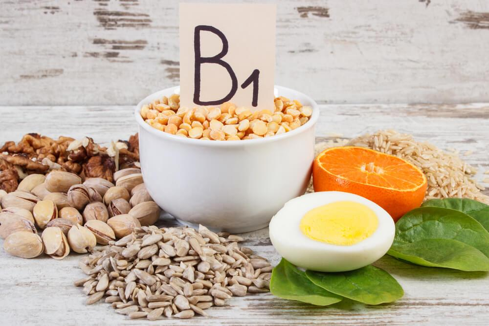
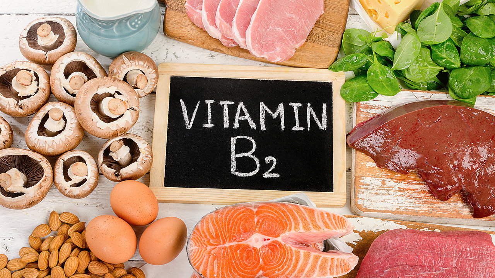
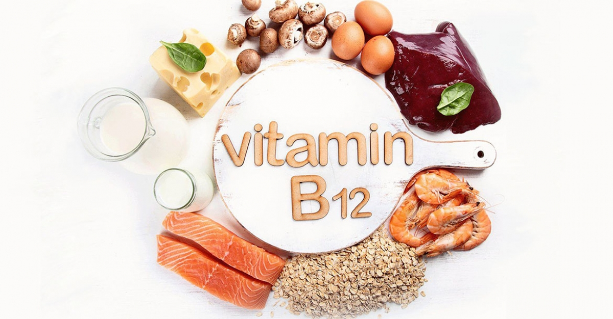
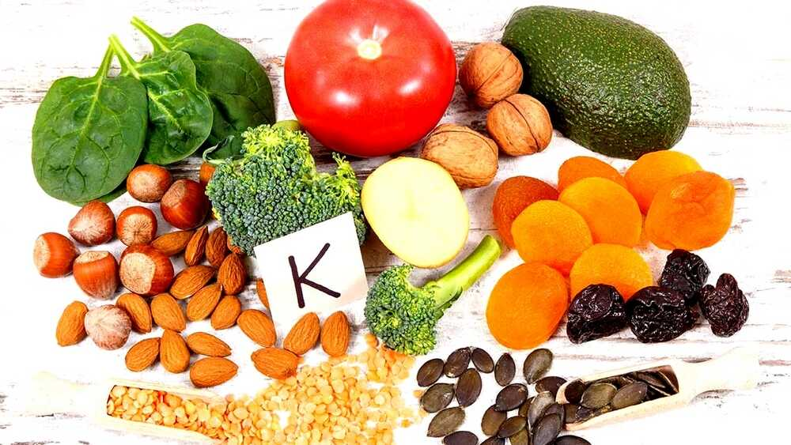

A-vitamin
Funkciója: növekedés, szürkületi látás, a szaruhártya egészsége, fertőzéssel szembeni ellenállás.
- Hiánya fejlődési zavarokat, farkasvakságot, a bőr szárazságát okozza.
Forrásai: tejtermékek, halmájolajak, tojássárgája.
- A sárgarépában és zöldségfélékben található karotint a szervezet A-vitaminná alakítja.

B1-vitamin
Funkciója: szénhidrát anyagcsere: az idegrendszer működése.
- Hiánya vizenyősödést vagy végzetes fogyással járó beriberit okoz.
Forrásai: élesztő, tojássárgája, máj, búzacsíra, borsó, bab.

B2-vitamin
Funkciója:szövetlégzés.
- Hiánya a nyelv és az ajak gyulladását okozza.
Forrásai:élesztő, élesztő- és húskivonatok, tej, máj, sajt, tojás, zöldségfélék.

B12-vitamin
Funkciója:vérképződés.
- Hiánya vészes vérzékenységet okoz.
Forásai:élesztő, hús, máj, vese, tej, sajt, tojás, zöldségfélék.
C-vitamin
Funkciója:energiatermelés, anyagcserefolyamatok, fertőzéssel szembeni ellenállás.
- Hiánya skorbutot , vérzékenységet, fáradékonyságot okoz.
Forrásai:paprika, citrom, zöldségek, gyümölcsök.


D-vitamin
Funkciója:csontok egészséges fejlődése.
- Hiánya a csontok görbülését, törékenységét, csontlágyulást okoz.
Forrásai:vaj, halmájolaj.
- A növényi olajokban található előanyagot a szervezet alakítja D-vitaminná napsugárzás hatására.

E-vitamin
Funkciója:az idegrendszer, az izomzat és a here normális működéséhez illetve a terhesség ki¬hordásához fontos.
- Hiánya nem jellemző.
Forrásai:növényi magvak és olajok, saláták, zöldfőzelékek, tej, vaj.


K-vitamin
Funkciója:megfelelő májműködés.
- Hiánya nem jellemző.
Forrásai:bélbaktériumok termelik, külső bevitele általában nem szükséges.
